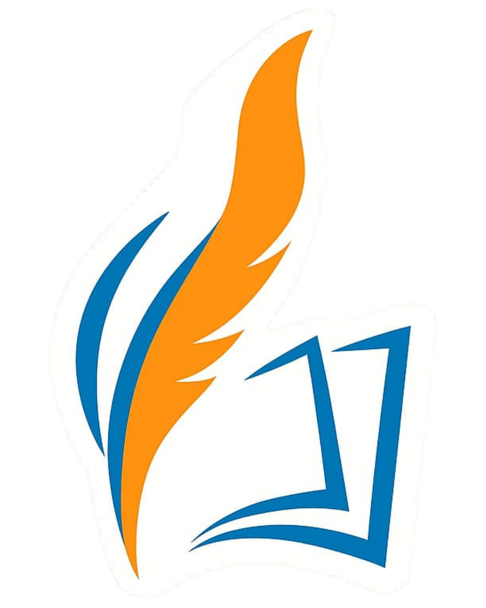

Ruang digital buat teman-teman Markaz. Cek pengumuman, jadwal, dan kumpul tugas jadi lebih gampang.
Satu pintu untuk semua info Markaz At-Ta'allum. Biar belajarnya makin fokus dan nggak ribet.
Urusan pendaftaran, kumpul tugas, dan formulir. Semua ada di sini.
Cek jadwal, kalender pendidikan, dan kumpulan materi belajarmu.
Pantau terus kabar dari Markaz di saluran resmi kita.